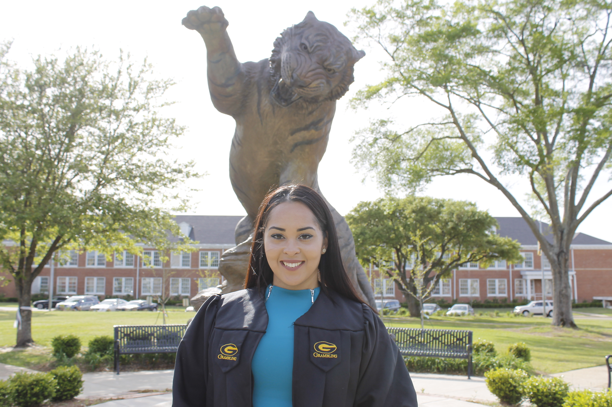
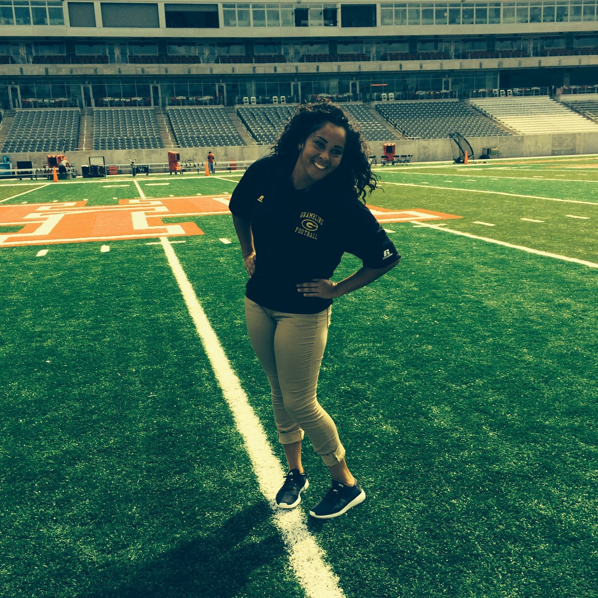
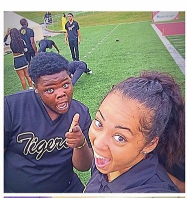
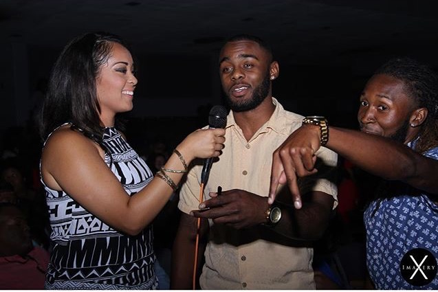
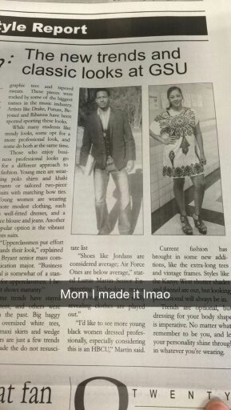
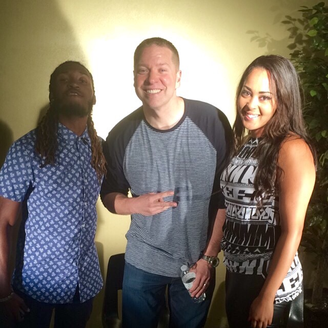
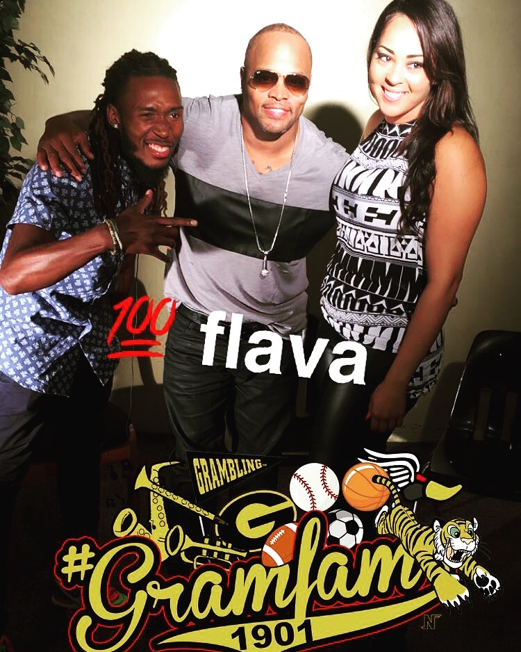

GRAMBLING STATE UNIVERSITY / MY HBCU STORY
Some chapters
stay with you.
Mine wears gold.
More than a degree.
More than four years.
A part of who I am.
01 / THE HBCU EXPERIENCE
Black & gold.
Always part of me.
I went to Grambling for an education. I left with experiences, relationships, and a sense of pride that stayed.
Grambling State University gave me a place to explore my love of sports and storytelling. From classrooms to football sidelines, there were opportunities to learn and grow.
But my HBCU experience was so much more than academics. It was the people, traditions, culture, friendships, and feeling of being part of something bigger than myself.
I graduated in 2016 with a degree in Multimedia Journalism, but the experiences I gained have continued to shape my life.
Grambling wasn't just where I went to college. It's part of my story.
02 / THE TEAM BEHIND THE TEAM
My view
of the game.

2013–2016
There's a whole team behind the team.
Working as a football equipment manager became one of the defining experiences of my time at Grambling.
My responsibilities included equipment, uniforms, inventory, travel preparation, maintenance, and day-to-day operations.
I learned how much preparation, teamwork, and attention to detail go into helping a team succeed — lessons that have stayed with me professionally.

03 / FINDING MY VOICE
The stories
worth telling.
Journalism turned my curiosity into conversations, experiences, and stories.
My time studying multimedia journalism wasn't limited to the classroom. I had opportunities to interview people, cover events, explore student media, and learn the craft of production.




FROM THE ARCHIVES / 2016
Grambling
Springfest.
An interview with Young Thug after his Springfest performance, and one of the moments from my college journalism experience.
Watch the interview ↗04 / FROM THE CAMERA ROLL
The moments
in between.
Because college was about more than assignments, classes, and work. It was the people I met, the events I experienced, and the memories we made.




Some memories are captured in photos. Others are the stories you keep telling years later.
05 / FOREVER A TIGER
The chapter ended.
The connection didn't.
Grambling helped me build more than a career foundation. It shaped how I think about hard work, community, opportunity, and showing up for something bigger than myself.
My journey has taken me into new industries and new places, but the people, lessons, and experiences from Grambling still influence how I lead, create, and connect.